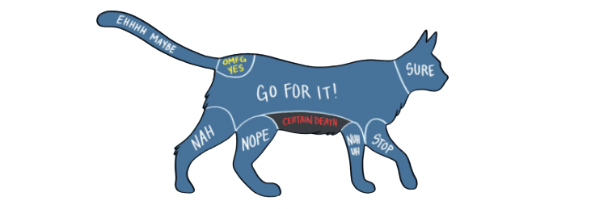

The key to success is to focus on providing the cat with as much choice and control during interactions as possible. For example, the choice to indicate whether they want to be petted or not, and control over where we touch them, and how long for.

Signs of cat enjoyment:
• Tail held upright and choosing to initiate contact.
• Purring and kneading you with their front paws.
• Gently waving their tail from side to side while held in the air.
• A relaxed posture and facial expression, ears pricked and pointed forwards.
• Giving you a gentle nudge if you pause while you're stroking them.
Signs of dislike or tension:
• Shifting, moving or turning their head away from you.
• Remaining passive (no purring or rubbing)
• Exaggerated blinking, shaking their head or body or licking their nose
• Rapid, short bursts of grooming.
• Rippling or twitching skin, usually along their back.
• Swishing, thrashing or thumping tail.
• Ears flattening to the sides or rotating backwards.
• A sharp sudden turn of their head to face you or your hand.
• Biting, swiping or batting your hand away with their paw.
What not to do:
Keep your petting from the head to the tail and don't switch directions. Some cats do not like getting stroked from tail to head.
Don't pat the cat. Some cats enjoy it, but some don't, and if you're not used to being around cats, you're better off not experimenting unless you want to risk a bite or scratch.
Stay away from the belly. When cats are relaxed, they might roll onto their back and expose their belly. Don't always take this as an invitation to rub their tummy, as many cats don't like that at all. This is because in nature cats must be careful to protect themselves from potential predators (as opposed to dogs, who are more confident in this regard – and love having their bellies scratched). The stomach is a vulnerable area where all the vital organs are located, so lots of cats will instinctively bare teeth and claws if touched here.